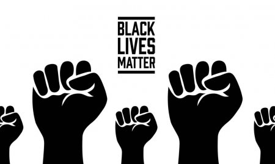

#BlackLivesMatter was founded in 2013 in response to the acquittal of Trayvon Martin’s murderer. Black Lives Matter Foundation, Inc is a global organization in the US, UK, and Canada, whose mission is to eradicate white supremacy and build local power to intervene in violence inflicted on Black communities by the state and vigilantes. By combating and countering acts of violence, creating space for Black imagination and innovation, and centering Black joy, we are winning immediate improvements in our lives.
Some History
BLM was cofounded as an online movement (using the hashtag #BlackLivesMatter on social media) by three Black community organizers—Patrisse Khan-Cullors, Alicia Garza, and Opal Tometi. They formed BLM after George Zimmerman, a man of German and Peruvian descent, was acquitted on charges stemming from his fatal shooting of Trayvon Martin, an unarmed Black teenager, in Sanford, Florida, in February 2012. Zimmerman, a neighbourhood-watch volunteer, had seen Martin walking in his neighbourhood and called the police because he thought Martin looked “suspicious.” Although police told Zimmerman not to do anything, he followed Martin, got into an argument with him, and shot and killed him. Zimmerman remained free for weeks after the shooting but was finally charged with second-degree murder and arrested in April, after demonstrations demanding his prosecution were held in cities across the United States. At his trial more than a year later, Zimmerman claimed that he had acted in self-defense. His acquittal in July 2013 was widely perceived as a miscarriage of justice and led to further nationwide protests.

You can also support the BLM movement by:
Checking out these youtube videos and Shopping here